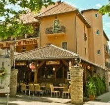

Eladó lakások
Édes álom Zuglón!

| Szobák száma |
Alapterület |
Erkély |
Garázs |
Emelet |
Ár |
Várható befelyezés |
Alaprajz |
| 3 |
74 m² |
10 m² |
Nincs |
II. |
95 millió Ft |
2026 II. negyedév |
alaprajz |
| 2 |
40 m² |
15 m² |
Nincs |
V. |
61 millió Ft |
2026 II. negyedév |
alaprajz |
| 2 |
55 m² |
17 m² |
Nincs |
V. |
70 millió Ft |
2026 II. negyedév |
alaprajz |
| 2 |
37 m² |
10 m² |
Nincs |
V. |
50 millió Ft |
2026 II. negyedév |
alaprajz |
| 2 |
40 m² |
15 m² |
Nincs |
V. |
61 millió Ft |
2026 II. negyedév |
alaprajz |
Főbb jellemzők:
- Modern kialakítás
- Parkosított udvar
- Kitűnő közlekedés
- Energiahatékony ablakok
Tömegközlekedés
- Metro: 1, 2
- Villamosvonalak: 14, 39, 22
- Busz: 107, 106
Lakásinformációk
| Megye |
Közeli városok |
Elhelyezkedés |
| Pest Megye |
Gödöllő |
Belváros |
| Fejér Megye |
Velence |
Lakópark (külváros) |
| Veszprém Megye |
Balatonalmádi |
Külváros |
Jellemzők:
- Újépítésű
- Modern
- Kitűnő közlekedés
- Teljesen új bútorzat
Tömegközlekedés
- Metro: 3
- Villamosvonalak: 55, 15
- Busz: 9